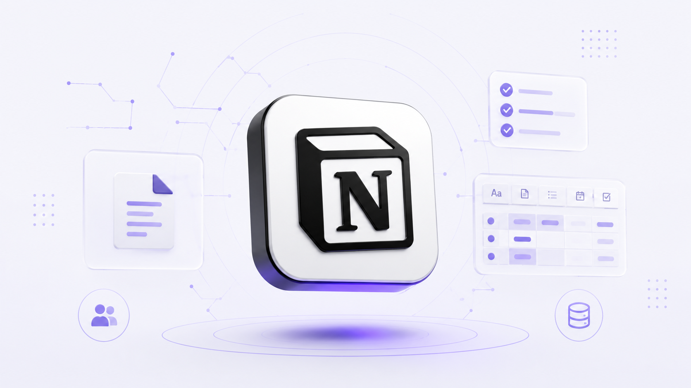

Plataforma de produtividade e organização que combina notas, documentos, bancos de dados e ferramentas de colaboração em um só lugar.
Acessar ferramentaO Notion é uma plataforma de produtividade e organização que reúne notas, documentos, bancos de dados, tarefas e outras ferramentas em um único espaço.
Ele pode ser utilizado para organizar projetos, estudos, informações pessoais e atividades de equipes, permitindo criar estruturas personalizadas de acordo com cada necessidade.
Além dos recursos tradicionais de organização, o Notion também possui recursos de inteligência artificial que ajudam na escrita, resumo, organização e criação de conteúdo.